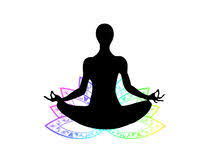
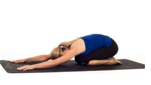
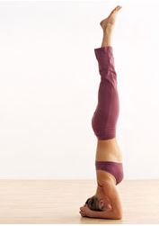
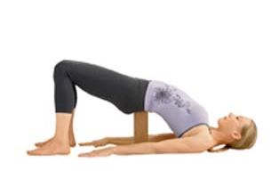
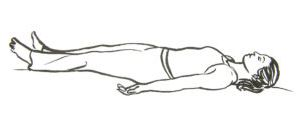

|  |
"If you want to fly, give up everything that weighs you down" -Buddah |
Top yoga poses for stress
|  |
1- Childs Pose Child’s pose stretches out the hips and normalizes circulation throughout the body. It regulates your nervous system, and is a pose of complete surrender If I feel stressed or anxious I’ll go into this pose and take 10 long, deep breaths. It immediately relieves stress. |
|  |
2- Head stand Headstand increases blood flow and oxygen to your brain. It speeds up your digestive system and reverses the flow of gravity. Plus, if you can stand on your head you can do anything. |
|  |
3- Supported bridge Bridge pose calms the central nervous system and cleanses your abdominal organs. If I feel anxiety or problems in my stomach, I’ll put a yoga block under my sacrum and just lay there for a few minutes. It is one of my favorite restorative poses. |
|  |
4- Savasana Everyone’s favorite pose. This is where the real yoga begins. The purpose of doing all of these postures is so that our mind is able to be completely still. Set your timer for 5-10 minutes and lay down on the ground completely relaxed. This is the most important pose. Everyone can carve out a few minutes a day to slow down and breathe. Make your health your priority! |